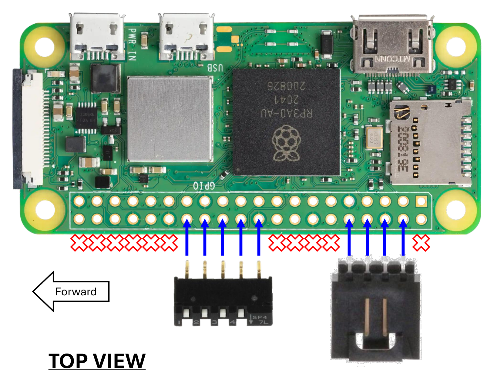
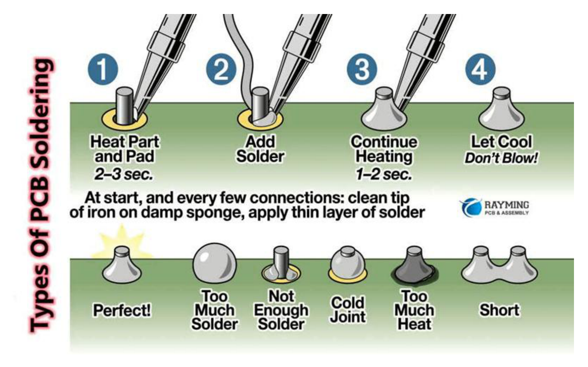
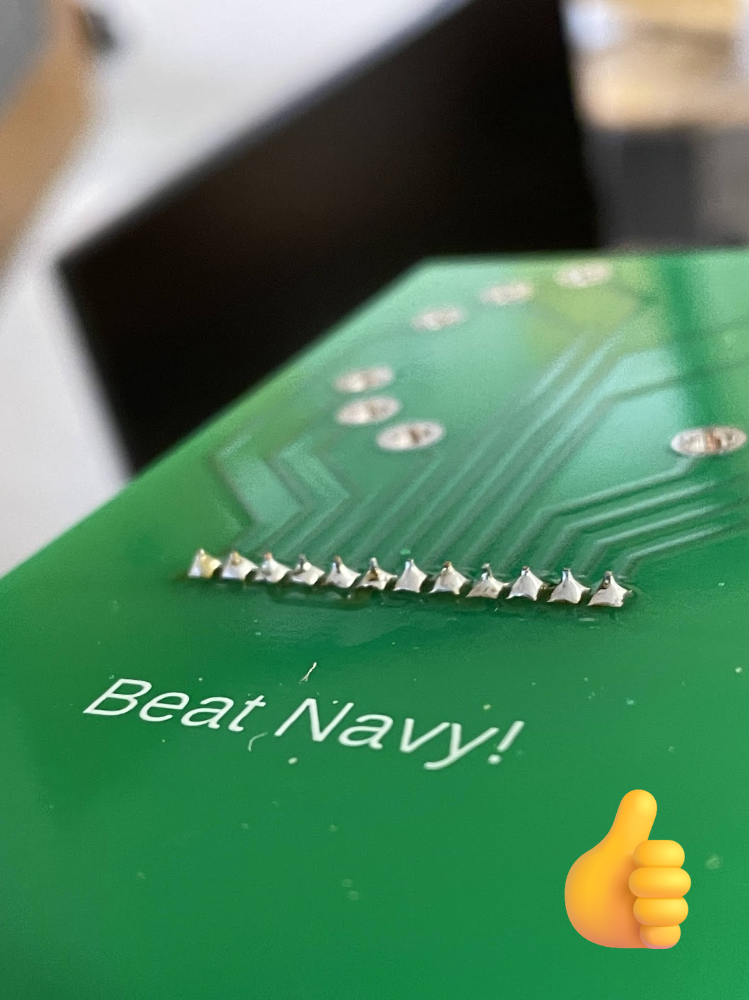

Task 1: Prepare the Raspberry Pi
Install the 4-pin latch header and SIP switch on the Raspberry Pi.
Parts required
- Raspberry Pi Zero 2 W
- Molex 4-pin latch header
- SIP switch
- Solder
Tools required
- Eye protection
- Soldering station
- Soldering iron
Step 1. Prepare the bench and place the parts
- Retrieve the Raspberry Pi Zero 2 W, the Molex 4-pin latch header, and the SIP switch from the supplies shelf.
- Put on eye protection.
- Turn on the soldering station and set it to 750 °F.
- While the iron is heating, insert the 4-pin header through the small row of holes from the front side and place the SIP switch exactly as shown in Fig. 1a.
STOP. Seek instructor validation before soldering. The two parts must match Fig. 1a exactly.

Fig. 1a. Parts orientation before soldering.
Step 2. Flip the board and solder all nine pins
- With both parts still inserted, carefully flip the Raspberry Pi so its bottom side faces up.
- Set the board down gently so it rests on the inserted parts and the nine pins point upward.
- For each pin, touch the iron tip to the pad and pin at the same time.
- Feed a small amount of solder into the joint until a smooth, shiny fillet forms.
- Remove the solder first, then remove the iron, and let the joint cool undisturbed.
- Repeat until all nine pins are soldered.
Inspection standard.
Inspect all nine joints. Reflow any joint that looks dull, cracked, bridged, or insufficiently wetted.
Inspect all nine joints. Reflow any joint that looks dull, cracked, bridged, or insufficiently wetted.
Helpful tips.
- Heat both the pad and the pin, then feed solder into the joint.
- Use only enough solder to form a small fillet. More solder is not a better joint.
- If the header will not stay square, temporarily hold it with a breadboard, tape, or helping hands.
- If two neighboring pins are bridged, reheat and wick away the excess solder before continuing.

Fig. 1b. Solder-joint guide.

Good example. Separate pins, small fillets, and no bridging.

Bad example. Excess solder and bridging across adjacent pins.
Common errors
- Soldering before an instructor verifies the part orientation.
- Bridging adjacent pads or pins with excess solder.
- Heating a pad too long and damaging the board or nearby plastic.
- Moving the board before the joint cools, which creates a cold joint.